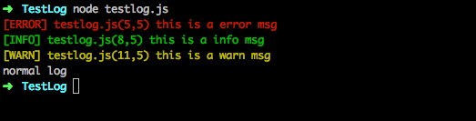

日志系统是重要的服务器手段，一个好的日志系统应该有以下特点
- 1.log日志必须是异步的。node.js和cocos.js都是单线程的,同步的输出会阻塞单线程，导致性能急速降低,造成游戏卡顿. 我们广西项目牌友群卡顿主要就是因为cc.log输出了大的日志。
- 2.log日志应该能方便的定向到对应的文件里面去
- 3.log日志分等级和颜色
- 4.调试时全部打印到标准的输出文件，上线时再输出到文件
- 5.创建output文件夹用来存放输出的日志
当前日志系统有以下优点
- 满足条件1、3
- 支持错误、警告和普通输出
- 有报错的行号,方便定位

引入到自己的工程中使用
//看自己存放文件的路径
var log = require("./log.js");
//错误日志
log.error("this is a error msg");
//普通输出日志
log.info("this is a info msg");
//警告日志
log.warn("this is a warn msg");